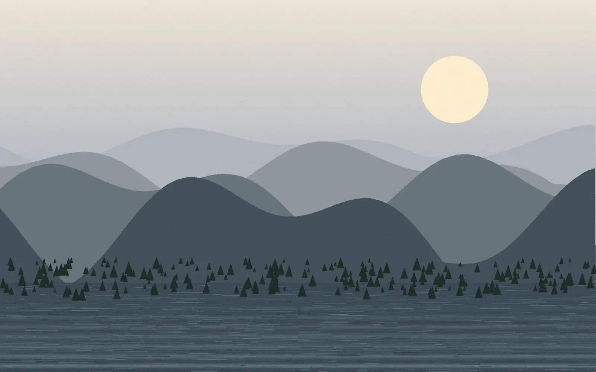

Lossless
Every original value can be rebuilt exactly. Run-length encoding is lossless, and so is the DEFLATE algorithm that shrinks an SVG. Use it when the data must survive intact: line art, screenshots, text, source files.
Raster vs Vector Graphics and Compression
Every image on a screen is stored one of two ways: as a grid of coloured squares, or as instructions for drawing shapes. Here is one scene saved both ways, shown at the same size.
A raster image stores a fixed number of pixels, each holding a colour value. The photograph here is 1600 pixels wide and 1000 tall, so the file describes 1,600,000 separate colour samples. Nothing in it knows there is a mountain in the picture. There is only the grid.
Each pixel carries three 8-bit channels for red, green and blue: 24 bits per pixel. Uncompressed, this photograph needs about 4.8 megabytes. The WebP version on this page is about 23 kilobytes.
Because the pixel count is fixed when the file is saved, enlarging a raster image cannot invent detail that was never recorded. The screen simply draws each stored square bigger.

The shape on the left is stored as one line of text: start at a point, curve toward two control handles, finish at another point. The hollow circles are anchors; the filled ones are handles that bend the curve between them.
Nothing in that description mentions pixels. The browser works out which pixels to light up at the moment it draws, using whatever resolution the screen has. Ask for it ten times larger and it recalculates instead of stretching, so the edge stays as sharp as the display allows.
The trade-off is that vectors only suit things made of describable shapes. A photograph has no shapes to describe, which is why the picture in the previous section is a raster file.
The hero scene again, both versions side by side. Drag the control to magnify the sunset on each. The raster pane can only enlarge its 480 × 270 pixels. The vector pane redraws.
Neighbouring pixels are usually similar, so storing each one literally is wasteful. Compression finds that repetition and writes it down more briefly. Run-length encoding is the simplest version: record a colour once, then count how many times it repeats.
Every original value can be rebuilt exactly. Run-length encoding is lossless, and so is the DEFLATE algorithm that shrinks an SVG. Use it when the data must survive intact: line art, screenshots, text, source files.
Some information is discarded on the bet that nobody will notice. The WebP photograph on this page is lossy, which is how 4.8 megabytes of raw samples became 23 kilobytes. Save a lossy file twice and it loses detail twice.
narration.mp3, a synthesized voice reading the transcript, compressed from WAV for the web.
A raster image is a fixed grid of colour samples, so enlarging it can only make the stored squares bigger. A vector image is a description of shapes, redrawn at whatever resolution the screen provides. Photographs have to be raster because they have no shapes to describe. Logos and diagrams are better as vectors because they do. Compression shrinks both, either losslessly by recording repetition more briefly, or lossily by discarding detail the eye is unlikely to miss.
Every figure below was measured from the files in this project, not estimated.
| Asset and format | Original to compressed | Colour depth / quantization | Compression algorithm |
|---|---|---|---|
| hero-photo.webp | 651 KB PNG to 22.6 KB WebP | 24-bit RGB, 8 bits per channel | Lossy VP8: predictive coding, DCT, arithmetic coding |
| path-diagram.svg | 722 B to 345 B gzipped | No sampling; colours declared as 24-bit hex | Lossless DEFLATE: LZ77 plus Huffman coding |
| narration.mp3 | 1.54 MB WAV to 287 KB MP3 | 16-bit PCM, 22.05 kHz mono source; 64 kbps output | Lossy MPEG-1 Layer III: psychoacoustic model, Huffman coding |
The PNG figure is the same photograph exported without lossy compression, kept as the baseline.